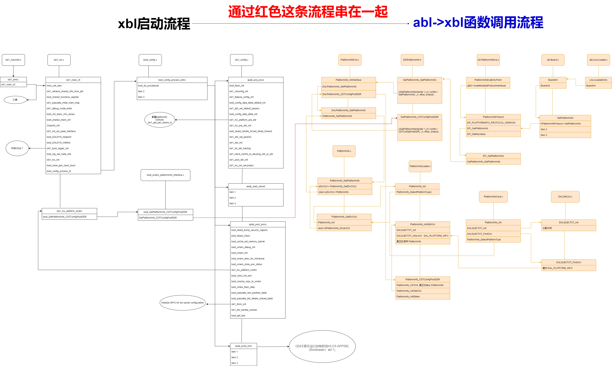
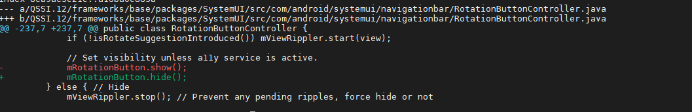

非接认证,EMV
L1:就看你数据链路层是否ok，波形啊，时序啊等等
L2:paypass，paywave 纯应用
L3:和银联那边对接了吧
非接,影响tp,导致tp乱点,需要去掉自动旋转

解决方法
private void updateRotationButton() 这个方法注释掉

解决方法2
QSSI.12/frameworks/base/packages/SystemUI/src/com/android/systemui/navigationbar/RotationButtonController.java mRotationButton.show -> mRotationButton.hide

解决方法3
解决方法1.2好像都不行.
--- a/QSSI.12/frameworks/base/packages/SystemUI/src/com/android/systemui/navigationbar/RotationButtonController.java +++ b/QSSI.12/frameworks/base/packages/SystemUI/src/com/android/systemui/navigationbar/RotationButtonController.java @@ -205,6 +205,7 @@ public class RotationButtonController { // Similarly, a call to make the button visible may be rejected because an a11y service is // active. Must account for this. // Rerun a show animation to indicate change but don't rerun a hide animation + if(true) return; if (!visible && !mRotationButton.isVisible()) return; final View view = mRotationButton.getCurrentView();